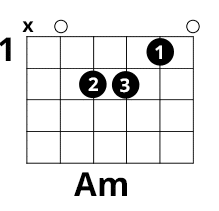
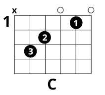
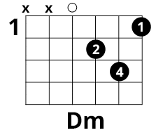
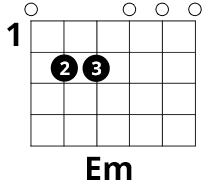
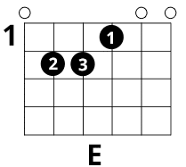
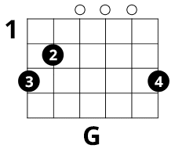

Основные гитарные аккорды
«Открытые» — значит, в аппликатуре есть незажатые струны. Все схемы ниже играются у верхнего порожка, без баррэ.
Шесть основных форм






Из каких нот они состоят
В этих аккордах три разные ноты. На гитаре некоторые из них повторяются в разных октавах, поэтому звучать могут четыре, пять или шесть струн. Буква m после названия означает минор.
| Аккорд и ноты | Звучащих струн | Тип | Аппликатура |
|---|---|---|---|
| Am — Ля · до · ми | 5 | Минорный | x02210 |
| C — До · ми · соль | 5 | Мажорный | x32010 |
| Dm — Ре · фа · ля | 4 | Минорный | xx0231 |
| Em — Ми · соль · си | 6 | Минорный | 022000 |
| E — Ми · соль-диез · си | 6 | Мажорный | 022100 |
| G — Соль · си · ре | 6 | Мажорный | 320003 |